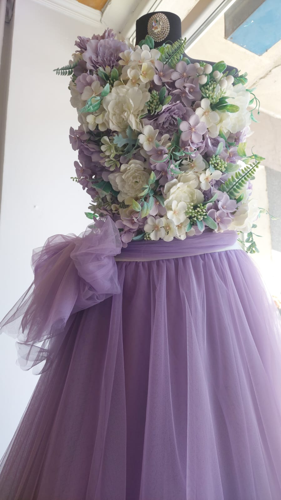
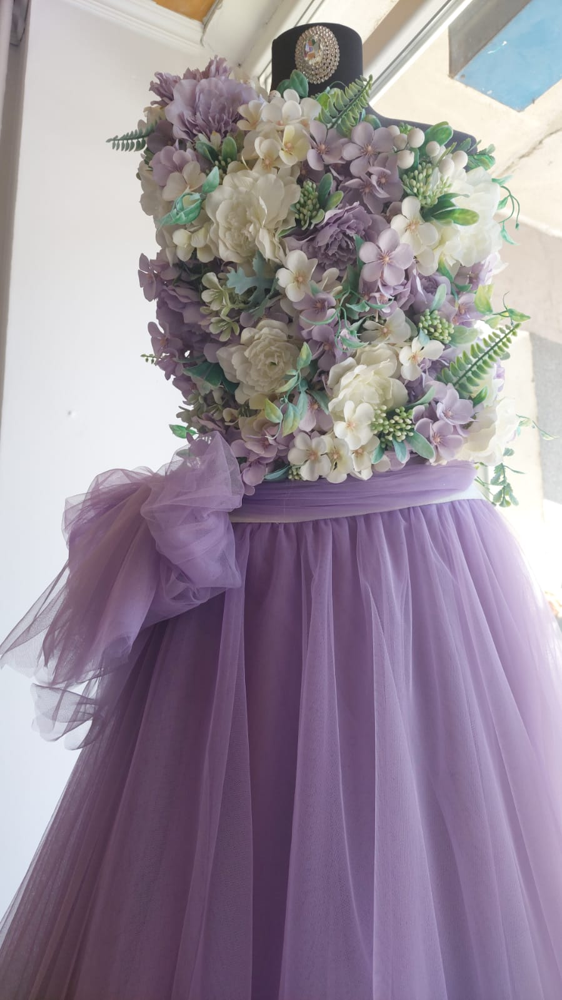
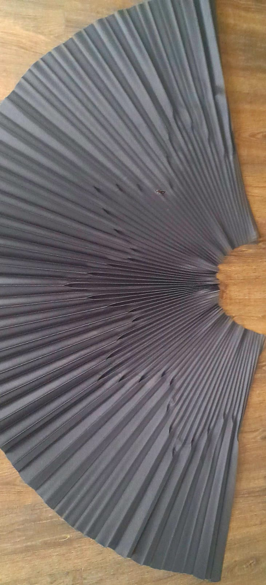
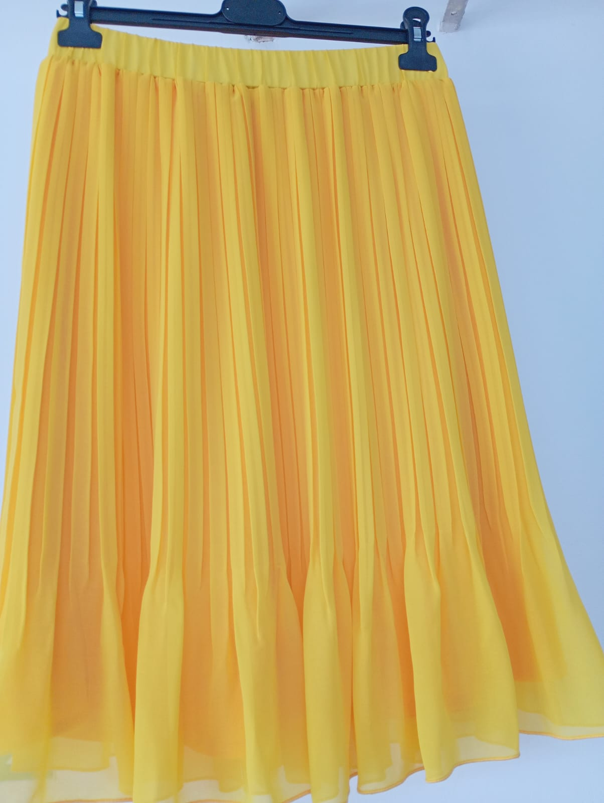
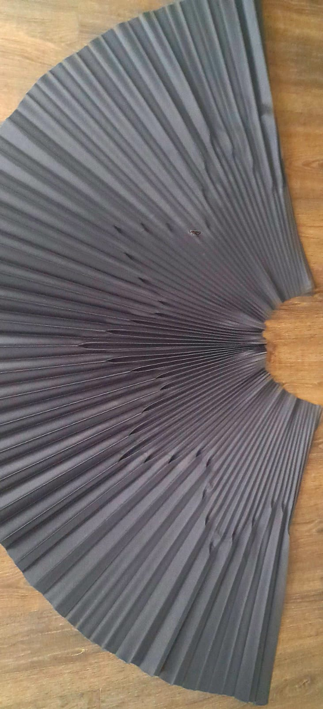
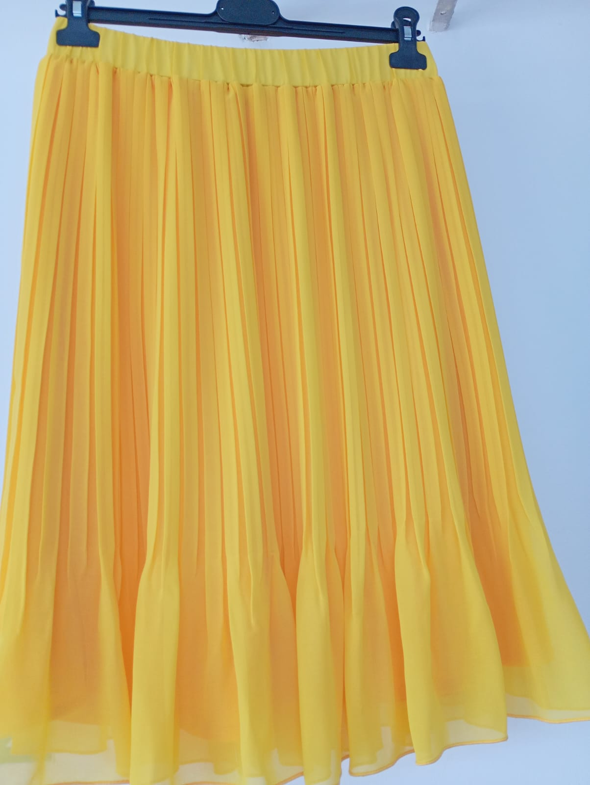

Creat pentru potrivire perfectă. Iubit pentru stil. Moda este o alegere.
La Atelier Croitorie Confecția din Ploiești, ne mândrim cu un standard ridicat de producție și cu satisfacerea fiecărui client. Hainele noastre sunt moderne, elegante și realizate cu grijă.

 

 


